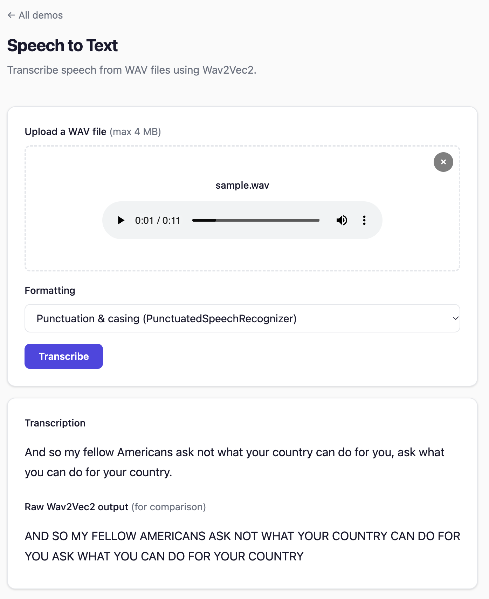

Speech-to-Text¶
Transcribe audio files to text. inference4j supports three speech models:
- Moonshine (
inference4j-core), Moonshine AI's English model built for live and on-device use. It generates punctuated, cased text, and spends compute only on the audio it is given. - Wav2Vec2 (
inference4j-core), a non-autoregressive CTC model that converts speech to text in a single forward pass. Its output is upper-case and unpunctuated, so pair it with a punctuation model for readable text. - Whisper (
inference4j-genai), OpenAI's encoder-decoder model, which generates punctuated, cased text directly and can also translate to English.
Choosing a model¶
The same 11-second recording through each option:
| Option | Transcript | Time* |
|---|---|---|
| Wav2Vec2 | AND SO MY FELLOW AMERICANS ASK NOT WHAT YOUR COUNTRY CAN DO FOR YOU ASK WHAT YOU CAN DO FOR YOUR COUNTRY | ~0.25 s |
| Wav2Vec2 + punctuation | And so my fellow Americans ask not what your country can do for you, ask what you can do for your country. | ~0.22 s |
| Moonshine small | And so my fellow Americans, ask not what your country can do for you, ask what you can do for your country. | ~0.26 s |
| Moonshine tiny | And so, my fellow America, ask not what your country can do for you, as what you can do for your country. | ~0.14 s |
| Whisper small | And so my fellow Americans, ask not what your country can do for you, ask what you can do for your country. | ~0.5 s |
* Measured on an Apple M4 Pro CPU, with the models already loaded.
- Moonshine: accurate, readable English with no extra dependency, and the only option that transcribes live audio while it is spoken. On long-form talks the default small model lands between whisper-tiny and whisper-small in accuracy, at an eighth of whisper-small's download (see Measured accuracy). English only.
- Wav2Vec2: the fastest and smallest option, and part of
inference4j-corewith no extra dependency. Add the punctuation model when people will read the text. - Whisper: the most accurate and readable output, plus 99 languages and translation to English
(we currently verify English transcription only). It needs the
inference4j-genaimodule and is slower, because it generates text token by token.
Quick example¶
try (var recognizer = Wav2Vec2Recognizer.builder().build()) {
System.out.println(recognizer.transcribe(Path.of("audio.wav")).text());
}
Full example¶
import io.github.inference4j.audio.Wav2Vec2Recognizer;
import io.github.inference4j.audio.Transcription;
import java.nio.file.Path;
public class SpeechToText {
public static void main(String[] args) {
try (var recognizer = Wav2Vec2Recognizer.builder().build()) {
Transcription result = recognizer.transcribe(Path.of("speech.wav"));
System.out.println(result.text());
}
}
}
From raw audio data¶
If you already have audio samples as a float array:
try (var recognizer = Wav2Vec2Recognizer.builder().build()) {
float[] audioData = loadAudioSamples(); // your audio loading logic
Transcription result = recognizer.transcribe(audioData, 16000);
System.out.println(result.text());
}
Readable transcripts¶
Wav2Vec2 returns upper-case text with no punctuation, which is hard to read and a poor input for cased models such as named entity recognition. Wrap the recognizer in PunctuatedSpeechRecognizer to restore punctuation, casing and sentence boundaries:
try (SpeechRecognizer recognizer = new PunctuatedSpeechRecognizer(
Wav2Vec2Recognizer.builder().build(),
PunctCapSegModel.builder().stride(64).build())) {
System.out.println(recognizer.transcribe(Path.of("speech.wav")).text());
}
The wrapper is itself a SpeechRecognizer, so it can be used anywhere a recognizer is expected. It formats only the transcript text, and closing it closes both the recognizer and the punctuation model. stride(64) lets the punctuation model format transcripts of any length; without it, text beyond about 200 words is truncated.
The showcase app shows the difference on the same recording: the formatted transcript, with the raw Wav2Vec2 output below it for comparison.

See Punctuation & Casing for details and input limits.
Whisper¶
WhisperSpeechModel lives in the inference4j-genai module and runs Whisper through
onnxruntime-genai. It returns the same Transcription result:
try (var whisper = WhisperSpeechModel.builder()
.modelId("inference4j/whisper-small-genai")
.build()) {
System.out.println(whisper.transcribe(Path.of("speech.wav")).text());
}
Two models are published: inference4j/whisper-tiny-genai (~225 MB, fastest) and
inference4j/whisper-small-genai (~1.1 GB, more accurate). WhisperSpeechModel is a
SpeechRecognizer, so it can replace Wav2Vec2Recognizer anywhere a recognizer is expected. It
needs no punctuation wrapper, since its output is already punctuated. Whisper sees 30 seconds of
audio per pass, so wrap it in SegmentedSpeechRecognizer for longer
recordings. See Whisper for builder options and translation.
Moonshine¶
MoonshineRecognizer runs Moonshine AI's Moonshine v2 models in inference4j-core. Its output is
punctuated and cased, so it needs no punctuation wrapper:
try (var recognizer = MoonshineRecognizer.builder().build()) {
System.out.println(recognizer.transcribe(Path.of("speech.wav")).text());
}
| Model ID | Parameters | Download | WER (Open ASR avg.)* |
|---|---|---|---|
inference4j/moonshine-streaming-tiny-en |
34M | 46 MB | 12.00% |
inference4j/moonshine-streaming-small-en (default) |
123M | 140 MB | 7.84% |
inference4j/moonshine-streaming-medium-en |
245M | 260 MB | 6.65% |
* Moonshine AI's figures on the Open ASR Leaderboard average, for comparison with Whisper Large v3 at 7.44%. Our own long-form measurements are under Measured accuracy.
Unlike Whisper, Moonshine has no fixed 30-second window, so a short clip costs only its own length
in compute. It is still limited per call: one call transcribes at most 30 seconds
(MoonshineRecognizer.MAX_SECONDS), because beyond that the model starts repeating itself.
Longer audio throws IllegalArgumentException; wrap the recognizer in
SegmentedSpeechRecognizer to cut it at pauses. Moonshine's own runtime ends
lines after at most 15 seconds, which works well here too:
try (SpeechRecognizer recognizer = new SegmentedSpeechRecognizer(
MoonshineRecognizer.builder().build(),
SileroVadDetector.builder().build(),
Duration.ofSeconds(15))) {
System.out.println(recognizer.transcribe(Path.of("meeting.wav")).text());
}
Live transcription¶
MoonshineRecognizer.stream(vad) transcribes continuous audio, such as a microphone, while it is
being spoken. Feed audio as it arrives, in pieces of any size and at any sample rate; a voice
activity detector splits it into lines at pauses, and a listener receives each line's text as it
changes and once more when it is final:
try (var moonshine = MoonshineRecognizer.builder().build();
var vad = SileroVadDetector.builder().build();
TranscriptionStream stream = moonshine.stream(vad)
.listener(new TranscriptListener() {
@Override
public void onLineTextChanged(TranscriptLine line) {
showPartial(line.text()); // may still change
}
@Override
public void onLineCompleted(TranscriptLine line) {
append(line.text()); // final
}
})
.build()) {
while (capturing) {
stream.addAudio(nextMicBuffer(), 48000);
}
} // closing completes the open line
How it works:
- Silero VAD scores every 32 ms of audio. A line starts when the average speech probability over the last half second rises above the detector's threshold; it includes half a second of audio from before, so the first word is not clipped.
- While the line is open, its audio is encoded as it arrives, and every
updateIntervalof audio (500 ms by default) the line is decoded again, reusing the previous text as a draft, so only the words that changed cost new work.onLineTextChangedfires when the text differs. - When the speaker pauses, the line is decoded one last time and
onLineCompletedfires. A completed line never changes. If the speaker never pauses, lines end at the next dip in speech after two thirds ofmaxLineDuration(15 seconds by default), and at the maximum at the latest.
flush() completes the open line immediately, for example when a push-to-talk button is
released. Lines carry their start and end on the stream's timeline.
All work happens inside addAudio, on the calling thread, and listener events fire on that
thread. Updates take tens of milliseconds, so read the microphone on one thread and pass its audio
to the stream on another through a queue. One recognizer can serve several streams; their work is
serialized. Closing a stream leaves the recognizer and the detector open.
Measured by feeding the two TED-LIUM talks below in 100 ms pieces, on an Apple M4 Pro CPU limited to 4 threads:
| Model | Typical addAudio call |
Call with a text update (p50 / p95) | Word error rate |
|---|---|---|---|
| Moonshine tiny | 0.5 ms | 24 / 78 ms | 6.6% |
| Moonshine small | 1 ms | 51 / 147 ms | 3.6% |
The word error rate is slightly higher than when transcribing the whole recording with
SegmentedSpeechRecognizer (5.4% and 3.3%): live lines are shorter, so the model has less
context, and audio the detector scores as silence between lines is never transcribed.
| Stream option | Default | Description |
|---|---|---|
.listener(TranscriptListener) |
does nothing | Receives onLineStarted, onLineTextChanged and onLineCompleted |
.updateInterval(Duration) |
500 ms | Audio between updates of the open line's text |
.maxLineDuration(Duration) |
15 s | Longest line when the speaker does not pause; 1 to 30 s |
The models are Moonshine AI's 8-bit quantized ONNX Runtime graphs, released under the MIT license. We checked our implementation against Moonshine's own runtime, token for token, on test recordings.
Long recordings¶
SegmentedSpeechRecognizer splits long audio at pauses before passing it to any recognizer. It is
essential for Whisper, which processes at most 30 seconds per pass, and also keeps memory per pass
bounded for Wav2Vec2:
try (SpeechRecognizer recognizer = new SegmentedSpeechRecognizer(
WhisperSpeechModel.builder().modelId("inference4j/whisper-small-genai").build(),
SileroVadDetector.builder().build())) {
System.out.println(recognizer.transcribe(Path.of("meeting.wav")).text());
}
How it cuts:
- A voice activity detector finds the speech in the recording.
- Each piece ends at the midpoint of the latest pause that fits within the maximum length
(30 seconds by default; pass a
Durationas the third constructor argument to change it). - A stretch of speech with no pause at all is cut at the maximum length.
- The pieces' transcripts are joined with spaces, and their segments are shifted to the recording's timeline.
Audio that already fits is passed through unchanged. Closing the wrapper closes both the
recognizer and the detector. It is itself a SpeechRecognizer, so it combines with
PunctuatedSpeechRecognizer for Wav2Vec2.
Measured accuracy¶
| Word error rate (lower is better) | Cut every 30 s | SegmentedSpeechRecognizer |
HF transformers chunked |
HF transformers sequential |
|---|---|---|---|---|
| whisper-tiny | 13.2% | 6.1% | 6.1% | 6.5% |
| whisper-small | 11.7% | 3.7% | 3.7% | 3.9% |
Measured on the 11 talks of the TED-LIUM long-form
test set (148 minutes), with Whisper's standard English text normalizer. The two right-hand
columns run the same models through the HuggingFace transformers reference implementation's
long-form strategies (30-second chunks with 5-second overlap, and OpenAI's timestamp-driven
sequential decoding). The voice activity detection adds processing time: 12% with
whisper-small (302 s instead of 270 s for all 11 talks on an Apple M4 Pro CPU) and 40% with the
much faster whisper-tiny (74 s instead of 53 s).
On a shorter subset of the same test set (two talks, 11.4 minutes), with SegmentedSpeechRecognizer
and a 15-second maximum for every model:
| Model | Download | Word error rate | Time* |
|---|---|---|---|
| whisper-small | ~1.1 GB | 2.4% | 34 s |
| Moonshine small | 140 MB | 3.3% | 22 s |
| Moonshine tiny | 46 MB | 5.4% | 11 s |
| whisper-tiny | ~225 MB | 6.0% | 8 s |
| Wav2Vec2 | ~360 MB | 11.7% | 18 s |
* All 11.4 minutes, on an Apple M4 Pro CPU limited to 4 threads per model. Over a whole recording, Moonshine tiny is slower per minute of audio than whisper-tiny, but more accurate.
Builder options¶
For MoonshineRecognizer:
| Method | Type | Default | Description |
|---|---|---|---|
.modelId(String) |
String |
inference4j/moonshine-streaming-small-en |
HuggingFace model ID |
.modelSource(ModelSource) |
ModelSource |
HuggingFaceModelSource |
Model resolution strategy |
.sessionOptions(SessionConfigurer) |
SessionConfigurer |
default | ONNX Runtime session config, applied to each of the model's graphs |
For Wav2Vec2Recognizer (see Whisper for WhisperSpeechModel):
| Method | Type | Default | Description |
|---|---|---|---|
.modelId(String) |
String |
inference4j/wav2vec2-base-960h |
HuggingFace model ID |
.modelSource(ModelSource) |
ModelSource |
HuggingFaceModelSource |
Model resolution strategy |
.sessionOptions(SessionConfigurer) |
SessionConfigurer |
default | ONNX Runtime session config |
.vocabulary(Vocabulary) |
Vocabulary |
auto-loaded from vocab.json |
CTC vocabulary |
.inputName(String) |
String |
auto-detected | Input tensor name |
.sampleRate(int) |
int |
16000 |
Target sample rate (Hz) |
.blankIndex(int) |
int |
0 |
CTC blank token index |
.wordDelimiter(String) |
String |
"\|" |
Word separator token in vocabulary |
Result type¶
Transcription is a record with:
| Field | Type | Description |
|---|---|---|
text() |
String |
The transcribed text |
segments() |
List<Segment> |
Timed segments (empty for Moonshine, Wav2Vec2 and Whisper) |
Audio requirements¶
- Format: WAV files (loaded automatically from
Path) - Sample rate: Audio is automatically resampled to the model's target rate (16kHz by default)
- Channels: Mono (stereo is downmixed automatically)
- Duration: At most 30 seconds per call for Moonshine and per pass for Whisper; use
SegmentedSpeechRecognizerfor longer audio. No hard limit for Wav2Vec2, but very long files use more memory.
How it works¶
Moonshine runs as six ONNX Runtime graphs. A frontend turns 80 ms chunks of audio into features, an encoder with sliding-window attention encodes them, an adapter turns them into the decoder's memory, and a decoder generates tokens one at a time with greedy search. The attention caches stay in ONNX Runtime memory between tokens. Decoding stops at 6.5 tokens per second of audio, which ends decodes that start repeating.
Wav2Vec2 is a non-autoregressive model — it processes the entire audio waveform in a single forward pass and produces character-level predictions using CTC (Connectionist Temporal Classification) decoding.
The pipeline:
- Load and normalize audio from WAV file
- Resample to 16kHz if needed
- Run a single forward pass through the model
- Apply CTC greedy decoding to convert logits to characters
- Join characters into words using the word delimiter
Tips¶
- The default model (
wav2vec2-base-960h) is trained on English LibriSpeech data. For other languages, use an appropriate fine-tuned model. - Wav2Vec2 output is upper-case and unpunctuated. Use
PunctuatedSpeechRecognizerfor readable text, or before running cased models such as NER. - Wav2Vec2 works best with clean speech. For noisy audio, consider preprocessing with VAD to extract speech segments first — see Voice Activity Detection.
- Wav2Vec2 is a CTC model (single-pass), not an autoregressive model. It's fast but may be less accurate on complex audio. For better accuracy, multilingual support or translation, use Whisper.